Answer: \((c)\ 2,1,1,2\)
Solution:
We need the number of lone pairs on the central atom in \(\mathrm{ClF_3,\ NF_3,\ SF_4,\ XeF_4}\), respectively.
A quick rule is:
\(\text{Lone pairs on central atom} = \dfrac{\text{valence electrons of central atom} - \text{number of sigma bonds}}{2}\)
Applying this:
| Compound | Structure | No. of lone pairs on central atom |
|---|---|---|
| \(\mathrm{ClF_3}\) |
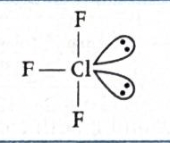 |
\(2\) |
| \(\mathrm{NF_3}\) |
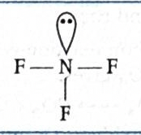 |
\(1\) |
| \(\mathrm{SF_4}\) |
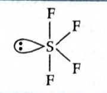 |
\(1\) |
| \(\mathrm{XeF_4}\) |
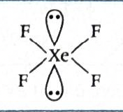 |
\(2\) |
Chlorine has \(7\) valence electrons and forms \(3\) sigma bonds with fluorine.
So:
\(\dfrac{7-3}{2} = 2\) lone pairs
Nitrogen has \(5\) valence electrons and forms \(3\) sigma bonds.
So:
\(\dfrac{5-3}{2} = 1\) lone pair
Sulfur has \(6\) valence electrons and forms \(4\) sigma bonds.
So:
\(\dfrac{6-4}{2} = 1\) lone pair
Xenon has \(8\) valence electrons and forms \(4\) sigma bonds.
So:
\(\dfrac{8-4}{2} = 2\) lone pairs
\(\mathrm{ClF_3,\ NF_3,\ SF_4,\ XeF_4 = 2,\ 1,\ 1,\ 2}\)
Therefore:
\(\boxed{(c)\ 2,1,1,2}\)
Why this method works:
JEE / NCERT takeaway:
1-minute solving trick:
\(\mathrm{ClF_3}: \dfrac{7-3}{2}=2\)
\(\mathrm{NF_3}: \dfrac{5-3}{2}=1\)
\(\mathrm{SF_4}: \dfrac{6-4}{2}=1\)
\(\mathrm{XeF_4}: \dfrac{8-4}{2}=2\)
\(\mathrm{2,1,1,2}\)
\(\mathrm{ClF_3}\) and \(\mathrm{XeF_4}\) have \(2\) lone pairs, while \(\mathrm{NF_3}\) and \(\mathrm{SF_4}\) have \(1\).
Common mistakes to avoid:
Chapter / Topic / Subtopic:
Final exam-style answer:
\(\mathrm{ClF_3}\) has \(2\) lone pairs on the central chlorine atom, \(\mathrm{NF_3}\) has \(1\) lone pair on nitrogen, \(\mathrm{SF_4}\) has \(1\) lone pair on sulfur, and \(\mathrm{XeF_4}\) has \(2\) lone pairs on xenon.
Therefore, the required sequence is:
\(\mathrm{2,1,1,2}\)
\(\boxed{(c)\ 2,1,1,2}\)
Quick cheatsheet:
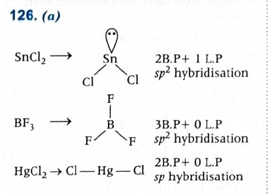
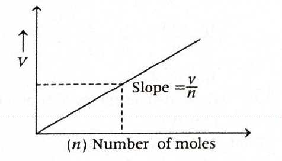
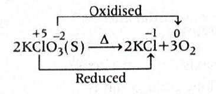
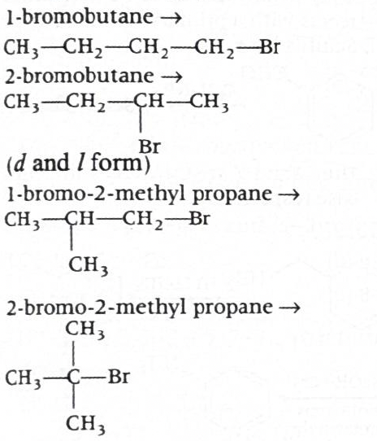
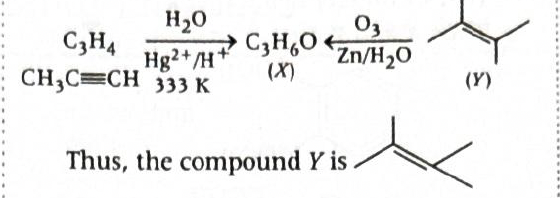
Answer: \((a)\ 12.5\%,\ 50\%\)
Solution:
Given crystal formula:
\(AB_2O_4\)
Oxygen atoms form a ccp lattice.
In a ccp arrangement, the effective number of atoms per unit cell is:
\(4\)
So, in one unit cell, the number of oxygen atoms is \(4\).
The ratio is:
\(A:B:O = 1:2:4\)
Since there are \(4\) oxygen atoms in one unit cell, the corresponding numbers are:
If the number of close-packed particles is \(n\), then:
Here \(n = 4\), so:
Number of \(A\) atoms \(= 1\)
Total tetrahedral voids \(= 8\)
Therefore,
\(x = \dfrac{1}{8}\times 100 = 12.5\%\)
Number of \(B\) atoms \(= 2\)
Total octahedral voids \(= 4\)
Therefore,
\(y = \dfrac{2}{4}\times 100 = 50\%\)
Therefore:
\(\boxed{x = 12.5\%,\ y = 50\%}\)
\(\boxed{(a)\ 12.5\%,\ 50\%}\)
Why this method works:
\(\text{number of host atoms} \rightarrow \text{number of voids} \rightarrow \text{fraction occupied}\)
JEE / NCERT takeaway:
\(4\)
Helpful diagram:
O atoms form ccp lattice
Host O atoms in one unit cell = 4
So:
Tetrahedral voids = 8
Octahedral voids = 4
Given formula:
A : B : O = 1 : 2 : 4
So in one unit cell:
A = 1 occupies tetrahedral voids
B = 2 occupy octahedral voids
Fraction occupied:
A in tetrahedral voids = 1/8 = 12.5%
B in octahedral voids = 2/4 = 50%
1-minute solving trick:
\(O = 4,\quad \text{tetrahedral voids} = 8,\quad \text{octahedral voids} = 4\)
\(A = 1,\quad B = 2\)
\(x = \dfrac{1}{8}\times 100 = 12.5\%\)
\(y = \dfrac{2}{4}\times 100 = 50\%\)
More intuitive memory trick:
\(\text{octahedral voids} = \text{host atoms}\)
\(\text{tetrahedral voids} = 2 \times \text{host atoms}\)
\(4 \rightarrow 4\ \text{octahedral},\ 8\ \text{tetrahedral}\)
Common mistakes to avoid:
\(\text{tetrahedral voids} \neq n,\quad \text{they are }2n\)
Chapter / Topic / Subtopic:
Final exam-style answer:
Oxygen atoms form ccp arrangement, so the number of oxygen atoms per unit cell is \(4\).
Hence in one unit cell, from \(AB_2O_4\):
\(A = 1,\quad B = 2,\quad O = 4\)
For ccp arrangement of \(4\) oxygen atoms:
Number of tetrahedral voids \(= 8\)
Number of octahedral voids \(= 4\)
Since \(A\) occupies tetrahedral voids,
\(x = \dfrac{1}{8}\times 100 = 12.5\%\)
Since \(B\) occupies octahedral voids,
\(y = \dfrac{2}{4}\times 100 = 50\%\)
\(\boxed{(a)\ 12.5\%,\ 50\%}\)
Quick cheatsheet:
\(4\)
\(\text{tetrahedral voids} = 2n\)
\(\text{octahedral voids} = n\)
\(\text{tetrahedral voids} = 8,\quad \text{octahedral voids} = 4\)
Match compound formula with the number of host lattice atoms first.
\(\dfrac{\text{number occupied}}{\text{total voids of that type}}\times 100\)
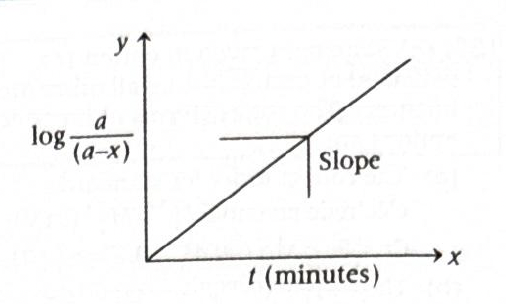
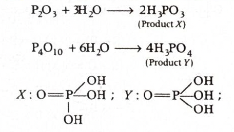
Answer: \((a)\)
Solution:
The diol shown is ethane-1,2-diol (ethylene glycol), \(\mathrm{HO-CH_2-CH_2-OH}\).
Such questions are based on condensation polymerisation: a diol reacts with a dicarboxylic acid to form a polyester.
The polymer indicated on the left is formed from ethylene glycol and o-benzenedicarboxylic acid (phthalic acid).
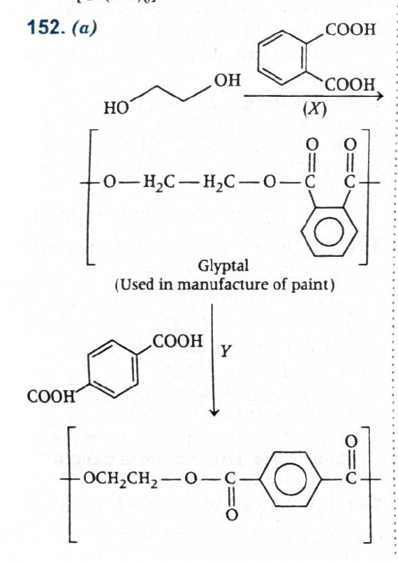
This polymer is commonly associated with glyptal, which is used in manufacture of paints.
Therefore, \(X\) is phthalic acid, that is benzene-1,2-dicarboxylic acid.
The polymer indicated on the right is terylene (dacron), which is formed from ethylene glycol and terephthalic acid.
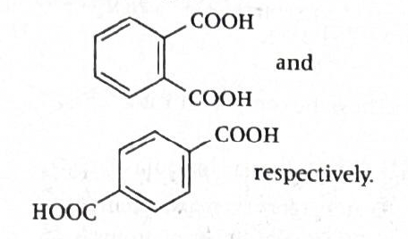
Terephthalic acid is benzene-1,4-dicarboxylic acid.
Therefore, \(Y\) is terephthalic acid.
So:
\(X =\) phthalic acid \((1,2\text{-dicarboxylic acid})\)
\(Y =\) terephthalic acid \((1,4\text{-dicarboxylic acid})\)
This corresponds to option \((a)\).
Therefore:
\(\boxed{(a)}\)
Why this method works:
\(\mathrm{-O-CO-}\)
JEE / NCERT takeaway:
1-minute solving trick:
\(\mathrm{ethylene\ glycol + terephthalic\ acid}\)
\(\mathrm{ethylene\ glycol + phthalic\ acid}\)
\(X = \text{phthalic acid},\quad Y = \text{terephthalic acid}\)
Common mistakes to avoid:
Chapter / Topic / Subtopic:
Final exam-style answer:
Ethylene glycol reacts with phthalic acid to give glyptal, which is used in manufacture of paints.
Ethylene glycol reacts with terephthalic acid to give terylene (dacron), associated here with safety helmets.
Hence:
\(X =\) phthalic acid and \(Y =\) terephthalic acid.
\(\boxed{(a)}\)
Quick cheatsheet:
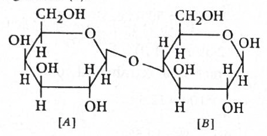
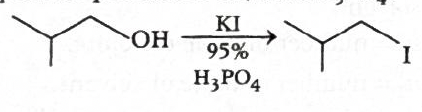
Answer: \((c)\ X < 109^\circ 28',\ Y > 109^\circ 28'\)
Solution:
In both A and B, the oxygen atom is approximately \(\mathrm{sp^3}\)-hybridised and has four electron pairs around it:
So the basic electron-pair geometry is tetrahedral, whose ideal angle is \(109^\circ 28'\).
In alcohol \(\mathrm{CH_3OH}\), oxygen has two lone pairs. Lone pairs occupy more space than bond pairs and exert stronger repulsion.
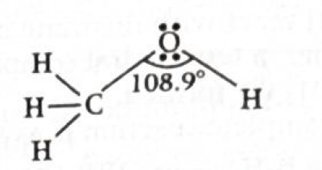
Because of this, the bond angle gets compressed slightly below the ideal tetrahedral angle.
So for A:
\(X < 109^\circ 28'\)
In fact, the \(\mathrm{C-O-H}\) angle in alcohol is close to \(108.9^\circ\), which is slightly less than tetrahedral.
In ether \(\mathrm{CH_3-O-CH_3}\), oxygen again has two lone pairs, but now both sides contain alkyl groups.
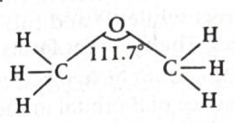
These two \(\mathrm{-CH_3}\) groups are bulkier than hydrogen and repel each other. This steric / bond-pair repulsion tends to open up the \(\mathrm{C-O-C}\) angle.
So in ethers, the \(\mathrm{C-O-C}\) angle becomes slightly greater than the tetrahedral angle.
Therefore for B:
\(Y > 109^\circ 28'\)
A typical \(\mathrm{C-O-C}\) angle in ether is about \(111.7^\circ\).
\(X < 109^\circ 28'\) and \(Y > 109^\circ 28'\)
Therefore:
\(\boxed{(c)\ X < 109^\circ 28',\ Y > 109^\circ 28'}\)
Why this method works:
\(\text{lone pair-lone pair} > \text{lone pair-bond pair} > \text{bond pair-bond pair}\)
JEE / NCERT takeaway:
\(109^\circ 28'\)
\(\mathrm{C-O-H}\) in alcohol is usually slightly less than tetrahedral, while \(\mathrm{C-O-C}\) in ether is usually slightly greater.
Helpful comparison:
\(\Rightarrow\) angle slightly compressed
\(\Rightarrow\) angle slightly expanded
1-minute solving trick:
\(X < 109^\circ 28',\quad Y > 109^\circ 28'\)
Common mistakes to avoid:
That is only the ideal angle; lone pairs and steric effects modify it.
Chapter / Topic / Subtopic:
Final exam-style answer:
Oxygen in both alcohol and ether is approximately \(\mathrm{sp^3}\)-hybridised, so the ideal angle is \(109^\circ 28'\).
In alcohol, the \(\mathrm{C-O-H}\) bond angle is slightly less than tetrahedral due to repulsion involving the two lone pairs on oxygen.
In ether, the \(\mathrm{C-O-C}\) bond angle is slightly greater than tetrahedral because the two bulky alkyl groups repel each other and open the angle.
Hence:
\(X < 109^\circ 28',\quad Y > 109^\circ 28'\)
\(\boxed{(c)}\)
Quick cheatsheet:
\(\mathrm{sp^3}\)
\(109^\circ 28'\)
\(\mathrm{C-O-H < 109^\circ 28'}\)
\(\mathrm{C-O-C > 109^\circ 28'}\)
lone-pair repulsion compresses angle
two bulky alkyl groups expand angle
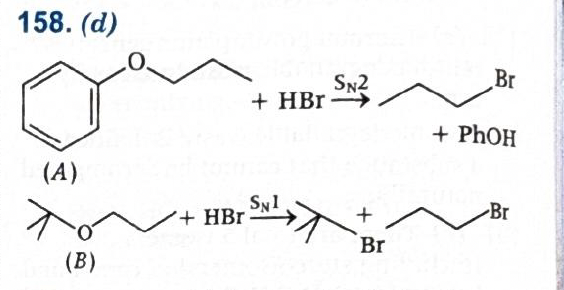
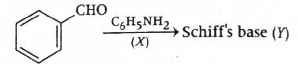
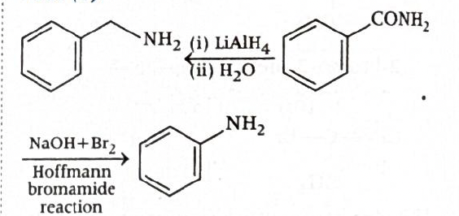